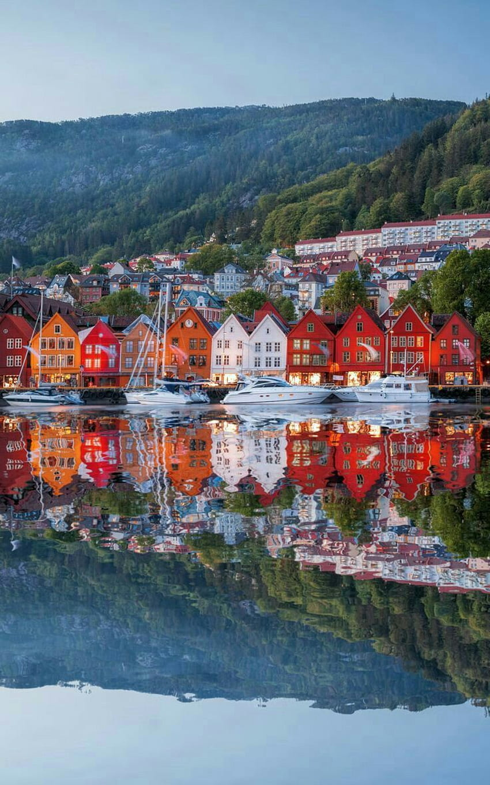

i. When In Prague: You get to say you went to Prague when you get back, and that's worth more to some people than the breathtaking sceneries in parts of the world with less conspicuous names.
ii. When in Oslo: You freeze. You also attend a fancy dress ball or two if you're invested enough in enhancing your Norwegian experience, but you won't escape the temperatures at these parties.
When in Utah: Escape Utah before the rest of the Sundance film festival attendees begin their odysseys home and you can't breathe at the airport.